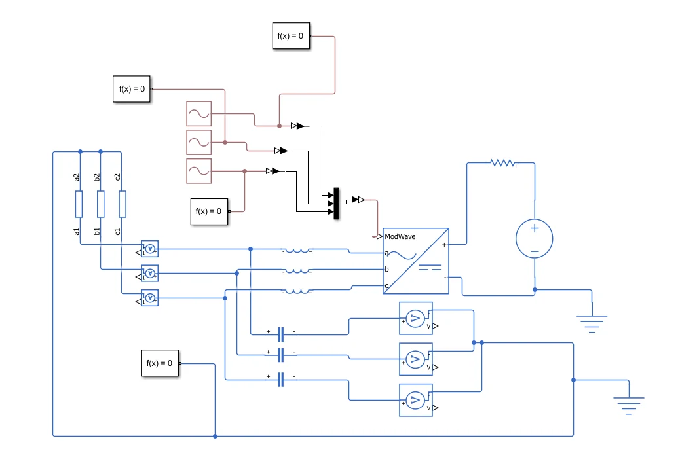

Inside the design · Stations 06–08
Power stage and filter
Before any control can happen, something has to turn DC into three-phase AC. This page follows the power from the 400 V DC bus, through six switches and an LC filter, out to the load. Everything here comes from my simulation and my packaging design. No hardware was built.
The power path at a glance
The power path of one inverter is short: a DC source, a three-phase converter, an LC filter on each phase, a small tie impedance, and then the bus where the load sits. In the final model (V13) two of these chains feed the same bus.
Here is the same path as I first built it in Simscape, in the very first version of the model. It reads right to left: the DC source, the converter block, three inductors, three capacitors with voltage sensors across them, three current sensors, and the load.

The DC side: 400 V and two capacitors
The input is a 400 V DC source1. In a real installation that would be a battery or the DC side of a solar array. In my models it is an ideal source.
Each phase of the converter can connect its output to the top DC rail or to the bottom one. Measured from the middle of the DC bus, that is +200 V or −200 V, so each phase has ±200 V to work with. In the model this number shows up as a parameter called Vdc_half = 2001. The controller's output for each phase is a number between −1 and +1 called the modulation, and the converter turns it into a voltage by multiplying it by 200 V:
vphase = m × Vdc/2 = m × 200 V
The output I want is about 71.5 V peak per phase2, so the modulation only needs to reach about 0.36 (71.5 / 200 = 0.3575). The controller uses roughly a third of the range it has, which leaves room for transients.
For the hardware design I put two DC-link capacitors on the bus, 220 µF and 450 V each3. Their job is to be an energy buffer right next to the switches, so the DC voltage stays stiff while the switches draw current in pulses. The ideal source in the simulation does not need them, so they come from the packaging step (V11) and not from the control models.
Six switches: the converter
The converter is a three-phase bridge: six switches, two per phase. Each pair connects its phase to the top rail or to the bottom rail, and by switching back and forth quickly it can make any average voltage in between.
In simulation I used an average-value voltage-source converter4. That block does not model the individual switching events. It takes the three modulation signals and outputs the average voltage the switches would produce over each switching period. This is a common choice for control design, because the model runs much faster and the control loops only react to the average anyway.
For the hardware design I picked an Infineon IKCM20L60GD3. It is an intelligent power module (IPM): six IGBTs, six diodes and the gate drivers in one 36 × 21 mm package, rated 600 V and 20 A. With the gate drivers inside, the controller only has to send logic-level signals. The module also has short-circuit protection built in5. That matters for faults: my software current limiter works from a one-cycle average of the current, so it is too slow for the first cycles of a fault. In hardware the module's own protection would have to cover those. The details are on the current limiting page.
I set the switching frequency to 10 kHz3. Faster switching makes the filter's job easier, but every switching event costs a little energy that ends up as heat in the module. In my thermal model, 16 kHz put the IGBT junction at 162 °C under heavy load, above the 150 °C the module allows3. At 10 kHz the same model gave 104.5 °C, and 110.6 °C once I replaced the hand-calculated heatsink value with the FEA one. Both are under my 125 °C design limit6. The thermal side is on the packaging and thermal page.
The LC filter: pulses in, sine out
What leaves the switches in hardware is a train of ±200 V pulses, 10,000 per second, whose width follows a 60 Hz sine. The LC filter keeps the 60 Hz and removes the pulses. Each phase has a 2 mH inductor in series and a 20 µF capacitor from the phase to ground7. The inductor resists fast changes in current. The capacitor resists fast changes in voltage. Together they are a low-pass filter.
The frequency where the filter stops passing and starts blocking is its resonance:
fres = 1 / (2π·√(L·C)) = 1 / (2π·√(0.002 × 0.00002)) = 1 / (2π × 0.0002) ≈ 796 Hz
I round that to 800 Hz7. It sits where it should: 60 Hz is about 13 times below it and passes almost untouched, and 10 kHz is about 12.5 times above it and is cut hard.
The inductor is not free at 60 Hz, though. Its reactance there is
XL = 2π·f·L = 2π × 60 × 0.002 ≈ 0.75 Ω
That 0.75 Ω7 turned out to matter a lot later. When I made the voltage loop regulate the capacitor voltage properly, this reactance stopped acting as a buffer between the two inverters, and I had to put it back in software. That story is on the parallel operation page.
The widget below shows the idea. It is one phase with ideal switches, the real L and C values and an 8.4 Ω load. Lower the switching frequency and watch the ripple grow as it gets closer to the resonance.
This plot needs JavaScript. At 10 kHz the filtered wave is a 60 Hz sine of about 71 V peak with a ripple of a volt or two.
After the filter: tie, bus and load
The voltage on the filter capacitor is what the controller regulates: about 71.5 V peak per phase at 60 Hz2. From there each inverter reaches the shared bus through a small tie impedance, 0.05 Ω and 0.2 mH per phase8. At 60 Hz the 0.2 mH is about 0.075 Ω (2π × 60 × 0.0002), so the tie is small. It stands for the cable between an inverter and the bus.
The load sits on the shared bus. The base load is 8.4 Ω per phase, purely resistive9. In the final model the two inverters together deliver about 0.9 kW into it (385.2 W and 520.3 W)10. Each test then switches something extra onto the bus at a set time:
| Test | Switched in, per phase | What it checks |
|---|---|---|
| Base load | 8.4 Ω resistive, always connected | Normal operation |
| Load step | a second 8.4 Ω in parallel | Load sharing between the two inverters |
| Overload | 4.2 Ω in parallel | Behaviour near the current rating |
| Bolted fault | 0.5 Ω + 1 mH | The current limit |
P and Q
A resistor only draws active power, P, the kind that does work. Many real loads also have inductance (motors, transformers), and an inductive load makes the current lag behind the voltage. That adds reactive power, Q. It moves back and forth between source and load every cycle without doing net work, but the inverter still has to carry it as current.
I tested that in V5, with a single inverter, by changing the load to 8.4 Ω in series with 20 mH per phase. The impedance per phase went from 8.4 Ω to 11.3 Ω, and the inverter delivered P ≈ 500 W and Q ≈ 410 VAR11. Q is what the voltage droop reacts to, which is covered on the inertia and droop page.
Sources for this page
- Implementation guide V1 (DC voltage source 400 V); manual V12, model parameter
Vdc_half = 200. ↩ - V13, D13. Measured capacitor voltage 71.4 V peak, reference V0 = 71.5 V; modulation fundamental 0.357. ↩
- Manual V11, Step 1 (hardware selection): Infineon CIPOS Mini IKCM20L60GD, 600 V / 20 A, 36 × 21 mm, Tj max 150 °C; 10 kHz, and 162 °C at 16 kHz under heavy load; DC link 2 × 220 µF 450 V; filter 3 × 2 mH toroids (OD 58 mm) and 3 × 20 µF film. ↩
- Implementation guide V1: Average-Value Voltage Source Converter (Three-Phase), modulation wave input. ↩
- Decision log D4 and D19: the first cycles of a fault are covered in hardware by the IPM short-circuit protection. ↩
- Decision log D1,
mission_results.txt: IGBT junction 110.6 °C at heavy load, design limit 125 °C. ↩ - Manual V13, Step 2; decision log D21: LC filter 2 mH / 20 µF, resonance about 800 Hz, 2 mH = 0.75 Ω at 60 Hz. ↩
- Manual V10, Step 4; decision log D21: tie 0.05 Ω + 0.2 mH per phase, 0.075 Ω at 60 Hz. ↩
- Manual V10 (corrections of 2026-11-11 and 2026-11-13); decision log D5 and D27. ↩
- V13, D26.
compare_v13xvs_8p4.txt, before the load step. ↩ - Manual V5, validation: R = 8.4 Ω, L = 20 mH, P ≈ 500 W, Q ≈ 410 VAR. ↩